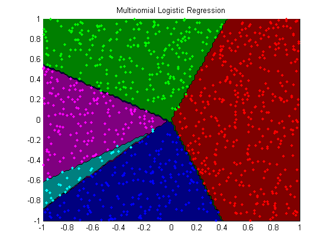

Minfunc Logreg Demo
options.Display = 'none';
setSeed(1);
nClasses = 5;
nInstances = 1000;
nVars = 2;
[X,y] = makeData('multinomial',nInstances,nVars,nClasses);
X0 = X;
X = [ones(nInstances,1) X];
funObj = @(W)SoftmaxLoss2(W,X,y,nClasses);
lambda0 = 1e-4;
lambda = lambda0*ones(nVars+1,nClasses-1);
lambda(1,:) = 0;
fprintf('Training multinomial logistic regression model...\n');
wSoftmax = minFunc(@penalizedL2,zeros((nVars+1)*(nClasses-1),1),options,funObj,lambda(:));
wSoftmax = reshape(wSoftmax,[nVars+1 nClasses-1]);
wSoftmax = [wSoftmax zeros(nVars+1,1)];
[junk yhat] = max(X*wSoftmax,[],2);
trainErr = sum(yhat~=y)/length(y)
figure;
plotClassifier(X,y,wSoftmax,'Multinomial Logistic Regression');
Training multinomial logistic regression model...
trainErr =
0.003000000000000
